2022年北京市中考数学真题 · 数学解答题 第26题 · 对应解析
26. 在平面直角坐标系 中，点
中，点
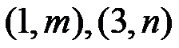
在抛物线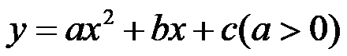
上，设抛物线的对称轴为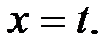
（1）当
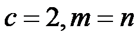
时，求抛物线与y轴交点 坐标及
坐标及 的值；
的值；（2）点
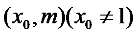
在抛物线上，若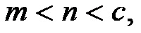
求的取值范围及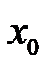
的取值范围．【答案】（1）（0，2）；2
（2）取值范围为
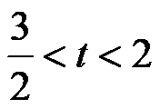
，的取值范围为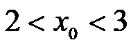
【解析】
【分析】（1）当x=0时，y=2，可得抛物线与y轴交点的坐标；再根据题意可得点关于对称轴为 对称，可得t的值，即可求解；
对称，可得t的值，即可求解；
（2）抛物线与y轴交点关于对称轴的对称点坐标为（2t，c），根据抛物线的图象和性质可得当
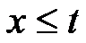
时，y随x的增大而减小，当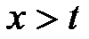
时，y随x的增大而增大，然后分两种情况讨论：当点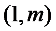
，点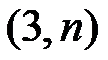
，（2t，c）均在对称轴的右侧时；当点在对称轴的左侧，点，（2t，c）均在对称轴的右侧时，即可求解．【小问1详解】
解：当
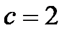
时，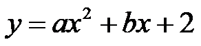
，∴当x=0时，y=2，
∴抛物线与y轴交点的坐标为（0，2）；
∵，
∴点关于对称轴为对称，
∴
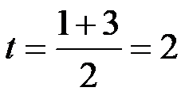
；【小问2详解】
解：当x=0时，y=c，
∴抛物线与y轴交点坐标为（0，c），
∴抛物线与y轴交点关于对称轴的对称点坐标为（2t，c），
∵
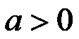
，∴当时，y随x增大而减小，当时，y随x的增大而增大，
当点，点，（2t，c）均在对称轴的右侧时，
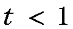
，∵1＜3，
∴2t＞3，即
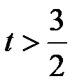
（不合题意，舍去），当点在对称轴的左侧，点，（2t，c）均在对称轴的右侧时，点
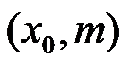
在对称轴的右侧，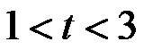
，此时点到对称轴的距离大于点到对称轴的距离，
∴
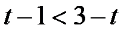
，解得：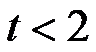
，∵1＜3，
∴2t＞3，即，
∴，
∵，，对称轴为，
∴
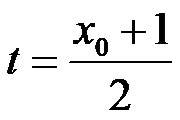
，∴
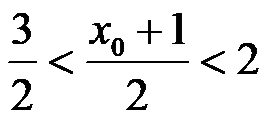
，解得：，∴的取值范围为，的取值范围为．
【点睛】本题主要考查了二次函数的图象和性质，熟练掌握二次函数的图象和性质是解题的关键．